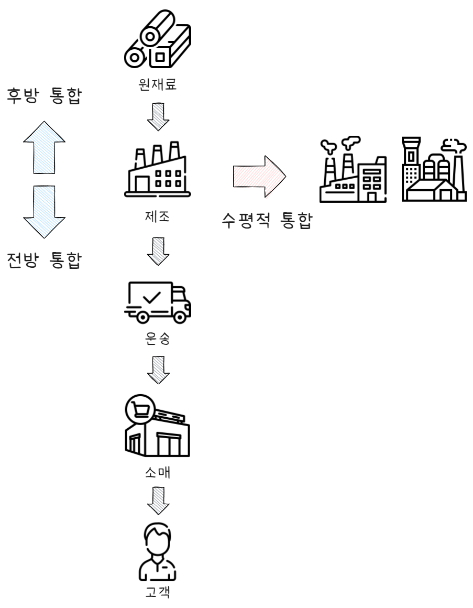

경쟁우위 생산전략
공장관리기술사, 생산운영, 재고, 물류, 공정, 설비, 작업, 생산성, 원가, OR
전략
전략은 일반적으로 다음과 같은 3단계 계층 구조로 구성된다.
- 기업전략(Corporate Strategy)
- 전체 기업의 비전과 장기적 방향성 설정
- 어떤 산업·사업에 진출하거나 철수할 것인가에 대한 의사결정
- 사업전략(Business Strategy)
- 개별 사업단위 수준에서의 경쟁 전략
- “어떻게 경쟁에서 승리할 것인가?”에 대한 전략 수립
- 운영전략(Operations Strategy)
- 생산, 물류, 품질, 설비 등 운영 부문이 사업전략을 실행하기 위한 구체적인 계획과 실행 전략
기업전략
기업전략(Corporate Strategy)이란, 기업이 장기적인 성장과 생존을 도모하기 위해 설정하는 최상위 전략 수준의 의사결정 체계를 의미한다. 이는 기업의 전체 방향성과 목적을 설정하고, 자원을 어떻게 배분할지, 어떤 사업에 진출하거나 철수할지를 결정하는 총체적인 전략이다. 기업 전략은 제품, 시장, 경쟁우위확보 등 다양한 요소를 포함하며, 우리는 어떤 사업을 할 것인가(What business are we in?)라는 질문에 대한 답을 제시하는 전략이라 할 수 있다.
기업전략 구성 요소
기업전략은 일반적으로 다음과 같은 세 가지 핵심 구성 요소로 이루어진다.
- 사명(Mission) 및 비전(Vision)
- 사명(Mission): 기업이 존재하는 목적과 사회적 역할을 명확히 기술한 문장
- 비전(Vision): 장기적인 관점에서 기업이 달성하고자 하는 미래 모습
- 목표(Goals) 및 전략적 방향
- 기업의 정량적·정성적 목표를 수립하고, 이를 달성하기 위한 전략적 방향성을 설정
- 예: 매출 성장, 시장점유율 확대, 기술 리더십 확보 등
- 사업 포트폴리오 관리
- 기업이 보유하고 있는 다양한 사업 단위(Business Units)를 평가하여, 어떤 사업에 투자하고, 어떤 사업을 철수할지를 결정
- 대표적인 도구: BCG 매트릭스, GE-McKinsey 매트릭스
기업전략 유형
기업전략은 그 목표와 범위에 따라 다음과 같이 구분된다.
- 집중 전략 (Concentration Strategy)
- 핵심 역량이 있는 하나의 사업 영역에 집중하여 경쟁우위를 확보하고 성장하는 전략
- 예: 특정 시장이나 제품군에 특화된 전략
- 다각화 전략 (Diversification Strategy)
- 새로운 제품이나 시장으로 진출하여 사업을 다각화하는 전략
- 관련 다각화: 기존 사업과 기술, 시장 등에서 연관성을 가진 분야로 확장
- 비관련 다각화: 기존 사업과 전혀 다른 영역으로 확장
- 새로운 제품이나 시장으로 진출하여 사업을 다각화하는 전략
- 수직적 통합 (Vertical Integration)
- 공급망 상의 앞단(전방 통합, Forward Integration)이나 뒷단(후방 통합, Backward Integration)으로 사업을 확장함으로써 원가 절감 또는 품질 통제를 도모하는 전략
- 인수합병 전략 (M&A: Mergers and Acquisitions)
- 외부 기업을 인수하거나 합병하여 시장 지배력 확보, 기술 습득 또는 규모의 경제 실현을 추구함.
기업전략 수립 모델

전략 수립은 다음의 순차적인 단계로 진행된다.
- 환경 분석 (Environmental Analysis)
- 외부 환경: 산업 구조, 시장 동향, 경쟁자 분석 (예: PEST, 5 Forces 분석)
- 내부 환경: 자원, 역량, 핵심 역량 분석 (예: SWOT 분석)
- 전략 대안 도출 및 평가
- 다양한 전략 대안을 도출하고, 실행 가능성과 성과 기대치 측면에서 비교 분석
- 전략 선택 및 실행계획 수립
- 가장 적합한 전략을 선택하고, 실행계획(Action Plan), 자원 배분계획, KPI 등을 설정
- 전략 실행 및 성과 관리
- 실행 과정에서의 조직 정렬, 리더십, 커뮤니케이션이 중요
- 성과 측정 및 전략 수정(피드백 루프)을 통한 지속적인 개선이 필요
사업전략
사업전략(Business Strategy)은 특정 사업단위(SBU: Strategic Business Unit)에서 경쟁 시장 내에서 지속가능한 경쟁우위를 확보하기 위해 수립하는 전략이다. 즉, “어떤 고객을 대상으로, 어떤 제품·서비스를, 어떤 방식으로 제공하여 경쟁사와 차별화할 것인가?”를 결정한다.
대표적 경쟁전략 (포터의 세 가지 일반 전략)
마이클 포터(Michael Porter)는 기업이 취할 수 있는 사업전략을 다음 세 가지로 구분하였다.
- 원가우위 전략 (Cost Leadership)
- 경쟁사보다 낮은 비용으로 제품·서비스를 제공함으로써 시장점유율 확보
- 규모의 경제, 효율적 생산 시스템, 공급망 최적화가 핵심
- 예: 이케아(IKEA), 월마트(Walmart)
- 차별화 전략 (Differentiation)
- 독특한 제품·서비스를 제공하여 고객 충성도 확보
- 품질, 디자인, 브랜드, 기술, 고객 서비스 등 차별화 요소 활용
- 예: 애플(Apple), 스타벅스(Starbucks)
- 집중 전략 (Focus Strategy)
- 특정 세분시장(Niche Market)을 목표로 원가우위 또는 차별화 전략을 집중적으로 수행
- 예: 고급 의료기기 전문업체, 프리미엄 맞춤형 제품 브랜드 등
전략선택 시 다음과 같은 요소를 고려해야 한다.
- 산업 구조(5Force)
- 고객 니즈 및 트렌드
- 내부 역량(Core Competence)
- 기술 및 자본 수준
운영전략
운영전략(Operations Strategy)은 생산, 공급망, 품질, 설비, 인력 등의 운영 활동을 통해 사업전략을 구체적으로 실행하기 위한 전략이다. 즉, 운영 자원을 어떤 방향으로 배치하고 관리할 것인지를 다룬다. 운영전략은 사업전략의 실행 기반이며, 실제 제품과 서비스가 어떻게 효율적으로 제공될지를 결정한다.
운영전략의 주요 구성 요소
운영전략은 일반적으로 다음의 네 가지 주요 경쟁요소(Competitive Priorities, QCDF)를 중심으로 수립된다.
- 품질(Quality)
- 일관된 성능, 신뢰성, 고객 기대 충족 수준
- 예: 식품 제조업의 위생 품질, 정밀 부품의 정밀도
- 비용(Cost)
- 생산 및 운영비 절감
- 예: 자동화, 공급망 최적화, 재고 최소화
- 납기(Delivery)
- 고객 요구 납기 내 생산 및 배송 가능성
- 예: Just-in-Time 생산 시스템, 리드타임 단축
- 유연성(Flexibility)
- 제품 다양성 대응, 소량 다품종 생산, 생산 전환 시간 단축
- 예: 주문형 생산(MTO), 모듈화 설계
이들 요소 간에는 트레이드오프(Trade-off) 관계가 존재할 수 있으므로, 기업의 경쟁전략에 맞춰 우선순위를 설정해야 한다.
운영전략 수립 절차는 다음과 같다.
- 외부 환경 및 고객 요구 분석
- 사업전략과 연계된 운영 목표 설정
- 운영역량 확보 및 자원 배치 계획 수립
- 성과 측정 및 지속 개선 활동 실행
참고로 전략간 연계성은 다음과 같다.
기업전략 ↔︎ 사업전략 ↔︎ 운영전략
| 전략 수준 | 주요 질문 | 담당 범위 | 예시 |
|---|---|---|---|
| 기업전략 | 어떤 사업을 할 것인가? | 사업 포트폴리오 | 자동차, 전자, 금융 등 |
| 사업전략 | 어떻게 경쟁에서 이길 것인가? | 각 사업단위 | 프리미엄 전기차 시장 진입 |
| 운영전략 | 어떻게 실행할 것인가? | 생산, 공급망, 품질 등 기능 부서 | 고효율 생산라인 구축, 품질 기준 수립 |
경쟁우선순위
경쟁우선순위는 생산관리 목표로 볼 수 있다. 기업 생존 부등식에 따라 고객 만족과 효율적 생산을 목표로 전체 조직이 지향하는 방향을 나타낸다.

1. 품질 (Quality)
품질은 제품이나 서비스가 고객의 기대와 요구를 일관되게 충족시키는 능력을 의미한다.
품질의 측면
- 설계 품질(Design Quality): 제품이나 서비스의 기능, 성능, 특성 등 설계 단계에서의 품질 수준
- 일치 품질(Conformance Quality): 설계된 품질 기준에 실제 생산된 제품이 얼마나 잘 부합하는가
- 서비스 품질(Service Quality): 고객 접점에서의 신뢰성, 응대 태도, 문제 해결력 등
운영전략 관점
- 품질 향상을 위한 표준화, 품질관리 시스템(TQM, SPC 등), 지속적 개선(Kaizen) 등이 중점적으로 운영 전략에 포함된다.
- 고품질은 차별화 전략에서 핵심 경쟁우위 요소로 작용함.
2. 비용 (Cost)
비용 경쟁력은 제품 또는 서비스를 최소한의 자원 투입으로 생산하여 고객에게 경쟁력 있는 가격으로 제공하는 능력이다.
주요 관리 대상
- 직접비 절감: 재료비, 인건비, 가공비 등
- 간접비 절감: 공정 자동화, 에너지 효율, 생산성 향상
- 공급망 최적화: 재고 회전율 개선, 로지스틱스 비용 절감
운영전략 관점
- 대량 생산(Mass Production), 설비 자동화, 생산공정 표준화, JIT 생산 등이 대표적인 운영 전략 요소
- 원가우위 전략(Cost Leadership)을 따르는 기업에게 핵심 경쟁 요소
3. 납기 (Delivery)
납기경쟁력은 고객이 요구하는 시점에 정확하고 신속하게 제품이나 서비스를 제공할 수 있는 능력을 의미한다.
두 가지 하위 요소
- 납기 신뢰성(Reliability): 약속된 납기 내 정확히 제공
- 납기 속도(Speed): 고객 주문부터 납품까지의 리드타임 최소화
운영전략 관점
- 리드타임 단축, 생산 스케줄링 최적화, 물류 시스템 고도화, Pull 시스템 구축
- 서비스 산업에서는 고객 대기 시간 최소화와 직결됨
4. 유연성 (Flexibility)
유연성은 시장 변화나 고객 요구에 대응하여 생산 제품, 생산량, 납기 등을 빠르게 조정할 수 있는 능력을 의미한다.
유연성의 종류
- 제품 유연성(Product Flexibility): 다양한 제품 라인을 신속하게 생산할 수 있는 능력
- 볼륨 유연성(Volume Flexibility): 수요 변화에 따라 생산량을 탄력적으로 조절할 수 있는 능력
- 변형 유연성(Mix Flexibility): 제품 구성을 다양하게 조합할 수 있는 능력
운영전략 관점
- 범용 설비 사용, 크로스 트레이닝된 인력, 모듈화 설계, 셀 생산(Cellular Manufacturing) 등
- 소량 다품종 생산, 고객 맞춤화 전략(Mass Customization)에 필수적인 요소
5. 서비스 (Service)
서비스는 단순히 제품을 넘어서, 고객 경험 전체에 대한 만족도를 향상시키는 경쟁 요소이다. 특히 제조업에서도 제품의 하자 대응, 고객 커뮤니케이션, A/S 등에서 중요한 차별화 요인으로 작용한다.
서비스의 구성 요소
- 접근성: 고객이 쉽게 제품이나 서비스를 이용할 수 있는가
- 신뢰성: 서비스가 일관되게 제공되는가
- 신속성: 문제 대응 및 의사결정의 속도
- 친절성: 고객 응대 태도 및 커뮤니케이션 품질
- 사후 지원: A/S, 피드백 반영, 교환/환불 정책 등
운영전략 관점
- 고객접점 관리(CRM), 고객 피드백 시스템, AI 기반 챗봇 도입, 현장대응 프로세스 등이 포함됨 - 서비스는 품질 및 납기 요소와 상호작용하며, 고객 충성도 및 재구매율에 영향을 미친다
다섯 가지 요소 간 관계 및 전략적 적용
| 경쟁요소 | 전략적 가치 | 주요 적용 분야 |
|---|---|---|
| 품질 | 고객 만족, 브랜드 가치 | 고급 소비재, 정밀 기계 |
| 비용 | 가격 경쟁력 확보 | 대량생산, 원가중심 산업 |
| 납기 | 고객 신뢰, 긴급 수요 대응 | 패스트푸드, 온라인 쇼핑 |
| 유연성 | 변화 대응, 고객 맞춤화 | IT, 패션, 부품 조립업 |
| 서비스 | 고객 경험 개선, 차별화 | 서비스업, B2C 제조업 |
운영 전략은 이들 요소 중 하나 또는 그 이상에 초점을 맞추되, 모든 요소를 동시에 최우선으로 추구하는 것은 현실적으로 어렵다. 따라서 기업의 경쟁전략, 시장 특성, 고객 요구에 따라 우선순위를 명확히 설정하고, 운영 시스템을 그에 맞게 설계해야 한다. 운영 전략의 다섯 가지 경쟁요소(QCDFS)는 기업의 생산 및 서비스 활동이 고객에게 지속가능한 가치를 제공하고 경쟁사 대비 우위를 점하기 위한 핵심 기준이 된다.
본원적 경쟁전략

마이클 포터(Michael E. Porter)는 1980년대 초 저서 『경쟁전략(Competitive Strategy)』에서 기업이 경쟁시장에서 지속가능한 경쟁우위를 확보하기 위해 취할 수 있는 본원적 경쟁전략을 제시하였다. 이 전략들은 모든 산업과 기업에 적용 가능한 일반적인 전략 유형으로, 사업단위 차원에서 어떻게 경쟁할 것인가에 대한 기본 틀을 제공한다.
본원적 경쟁전략의 유형
포터는 크게 두 가지 축을 기준으로 세 가지 전략을 도출하였다.
- 경쟁 범위(Competitive Scope)
- 전체 시장(광범위 시장)
- 특정 시장 세분(Niche, 집중 시장)
- 전체 시장(광범위 시장)
- 경쟁 우위 확보 방법(Competitive Advantage)
- 원가우위(Cost Leadership)
- 차별화(Differentiation)
- 원가우위(Cost Leadership)
| 전략 유형 | 경쟁 범위 | 경쟁 우위 | 전략 핵심 내용 |
|---|---|---|---|
| 원가우위 전략 | 광범위 시장 | 원가 절감 | 가장 낮은 비용 구조를 구축하여 가격 경쟁력 확보 |
| 차별화 전략 | 광범위 시장 | 독특성 제공 | 독특하고 차별화된 제품/서비스로 고객 충성도 확보 |
| 집중 전략 (포커스) | 특정 세분시장(Niche) | 원가우위 또는 차별화 | 좁은 시장에 특화하여 경쟁 우위 확보 |
원가우위 전략 (Cost Leadership)
- 목표: 업계 내 가장 낮은 생산·운영 비용을 달성하여 경쟁사보다 가격 경쟁력 확보
- 핵심 요소:
- 대량 생산을 통한 규모의 경제 실현
- 효율적인 공정 및 공급망 관리
- 비용절감 기술 및 프로세스 혁신
- 대량 생산을 통한 규모의 경제 실현
- 위험요소: 품질 저하, 과도한 원가 절감으로 인한 고객 가치 감소 가능성
- 적용 예: 월마트(Walmart), 이케아(IKEA)
차별화 전략 (Differentiation)
- 목표: 독특하고 우수한 제품·서비스를 제공하여 가격 민감도가 낮은 고객 확보
- 핵심 요소:
- 브랜드 이미지 및 디자인 차별화
- 기술 혁신 및 품질 향상
- 탁월한 고객 서비스
- 브랜드 이미지 및 디자인 차별화
- 위험요소: 차별화 비용이 너무 커져 가격 경쟁력 상실 가능성
- 적용 예: 애플(Apple), 스타벅스(Starbucks)
집중 전략 (Focus Strategy)
- 목표: 특정 시장 세분 또는 고객군에 집중하여 원가우위 또는 차별화 전략을 실행
- 핵심 요소:
- 좁은 시장에 특화된 제품/서비스 제공
- 시장 니즈에 대한 깊은 이해 및 맞춤 대응
- 좁은 시장에 특화된 제품/서비스 제공
- 유형:
- 비용 집중(Cost Focus): 특정 세그먼트 내에서 원가 절감
- 차별화 집중(Differentiation Focus): 특정 세그먼트 내 차별화
- 비용 집중(Cost Focus): 특정 세그먼트 내에서 원가 절감
- 위험요소: 세분시장 축소 시 성장 한계, 광범위 시장 진입 시 경쟁 압력
- 적용 예: 고급 시계 브랜드, 프리미엄 맞춤형 제품 업체
전략 선택 시 고려사항
- 산업 특성 및 경쟁 강도
- 기업의 핵심 역량 및 자원
- 시장 세분화 및 고객 요구 변화
- 기술 변화 및 규제 환경
포터는 본원적 경쟁전략 중 한 가지 전략에 집중하여 실행하는 것이 효과적이라고 강조하였다. 즉, 전략의 ‘중복’이나 ‘모호성’은 경쟁우위 확보를 어렵게 하며, ‘중간자 위치’(stuck in the middle)에 빠질 위험이 있다고 했다. 마이클 포터의 본원적 경쟁전략은 기업이 명확한 경쟁우위를 창출하기 위한 기본적이고 실용적인 틀을 제공한다.
생산시스템
생산시스템(Production System)은 원재료, 인력, 설비, 정보 등을 활용하여 제품이나 서비스를 창출하는 조직적인 체계를 의미한다. 이는 투입(Input)을 변환(Transformation)하여 산출(Output)로 만드는 일련의 과정을 포함하며, 제조업뿐 아니라 서비스업에도 적용된다.

생산시스템 개요
생산시스템의 구성 요소
| 구성 요소 | 설명 |
|---|---|
| 투입(Input) | 자원: 원재료, 부품, 인력, 설비, 정보, 자본 등 |
| 변환(Transformation) | 투입 요소를 제품이나 서비스로 가공·조립·조정하는 과정 |
| 산출(Output) | 완제품, 반제품, 서비스 등 고객에게 전달되는 가치 창출 결과 |
| 피드백(Feedback) | 성과에 대한 정보로 시스템 개선, 품질 향상, 공정 최적화에 활용 |
| 통제(Control) | 시스템 성능을 측정하고 기준과 비교하여 개선 조치를 취하는 활동 |
생산시스템의 유형
생산 형태에 따른 분류
| 생산 형태 | 특징 | 예시 |
|---|---|---|
| 프로젝트 생산 | 단일 또는 비반복적 제품, 고객 맞춤형, 복잡한 일정 | 항공기, 선박, 건설 등 |
| 단속 생산(Job shop) | 다양한 제품을 소량씩 생산, 높은 유연성 | 금형, 특수 기계, 수리작업 등 |
| 배치 생산 | 동일 제품을 일정 수량 생산한 후 다른 제품으로 전환 | 식품, 의약품, 도료 등 |
| 연속 생산 | 대량 표준제품을 중단 없이 생산, 낮은 제품 다양성 | 정유, 화학, 제지 산업 등 |
| 조립 생산(Line) | 조립 라인을 통한 대량 생산, 일정한 작업 흐름 | 자동차, 가전제품, 전자제품 등 |
흐름 방식에 따른 분류
| 분류 | 설명 |
|---|---|
| 푸시 방식 | 수요 예측 기반으로 생산 지시 (MRP 등), 재고 증가 가능성 |
| 풀 방식 | 실수요(실제 주문)에 따라 생산 시작 (JIT 등), 재고 최소화 가능 |
| 혼합 방식 | 예측 기반과 주문 기반을 적절히 조합한 방식 (ATO, BTO 등) |
생산시스템의 주요 목표
- 고객 만족: 품질, 납기, 가격 측면에서 고객 기대 충족
- 효율성 극대화: 자원 활용도 향상, 낭비 제거
- 유연성 확보: 다양한 수요 변화 및 제품 다양성 대응
- 품질 확보: 불량률 최소화, 품질 일관성 유지
- 납기 준수: 적시에 고객에게 제품 또는 서비스 제공
생산시스템 설계 시 고려사항
| 고려 요소 | 설명 |
|---|---|
| 제품 특성 | 제품의 크기, 복잡도, 수명주기 등에 따라 설비와 흐름 설계 결정 |
| 수요 특성 | 수요량, 수요 변동성, 주문 주기 등을 고려한 생산 계획 수립 |
| 공정 흐름 | 공정 순서, 작업 분할, 물류 흐름 등을 체계적으로 정리 |
| 자원 배치 | 인력, 설비, 공간 등의 효율적 배치를 통한 생산성 향상 |
| 정보 시스템 | ERP, MES, SCM 등을 통한 생산 계획, 실행, 피드백 체계 구축 |
생산시스템의 현대적 흐름
- 스마트 팩토리(Smart Factory): 자동화, IoT, AI 기반의 실시간 연결형 시스템
- 린 생산(Lean Production): 낭비 제거와 흐름 최적화를 통한 효율적 운영
- 적시생산(JIT): 재고 최소화와 품질 향상을 위한 수요 중심 생산
- 대량 맞춤 생산(Mass Customization): 유연성과 대량 생산의 조화
- 지속가능 생산(Sustainable Production): 친환경, 에너지 절약, ESG 경영 반영
생산시스템은 기업의 운영성과와 경쟁력을 좌우하는 핵심 인프라로, 제품/시장/고객 요구 변화에 따라 지속적으로 진화하고 있다.
주요 생산 시스템
테일러 시스템
테일러 시스템(Taylor System, 과학적 관리법)은 미국의 프레더릭 윈슬로 테일러(Frederick Winslow Taylor)가 20세기 초 제안한 과학적 관리법(Scientific Management)에 기반한 생산 및 작업 관리 체계이다. 이는 경험이나 직관에 의존하던 기존의 작업 방식을 과학적으로 분석하고 표준화함으로써 생산성을 극대화하고자 한 접근 방식이다.
테일러의 과학적 관리법의 핵심 원리
| 원리 | 설명 |
|---|---|
| 과학적 작업 방법의 개발 | 기존의 숙련공 방식 대신 작업을 과학적으로 분석하여 최적 작업 방법을 규명함. |
| 작업자의 과학적 선발 및 훈련 | 무작위 선발이 아닌 적합한 작업자를 선발하고 표준 작업법에 맞춰 교육 및 훈련 실시. |
| 경영자와 작업자의 역할 분담 | 경영자는 계획과 분석, 작업자는 실행에 집중 → 기능적 관리 원칙 도입. |
| 성과 기반의 동기 부여 | 작업 성과에 따른 인센티브 제공으로 동기 유발 및 생산성 향상 유도. |
테일러 시스템의 운영 특징은 다음과 같다.
표준화된 작업 절차
- 작업 동작, 공구 사용, 작업 순서 등을 과학적으로 분석하고 최적화
- 시간 및 동작 연구(Time & Motion Study) 활용
생산성 중심 관리
- 생산량, 작업 시간 등 정량적 지표를 기준으로 성과 측정
- 작업자 간 성과 비교 가능 → 관리의 객관성 강화
분업과 기능적 조직
- 하나의 작업을 분할하여 각자 전문화된 역할 수행
- 기능별 관리제(Functional Foremanship) 도입
→ 작업감독, 품질관리, 유지보수 등 역할별로 감독자 구분
테일러 시스템의 장점과 한계, 그리고 현대적 영향은 다음과 같다.
테일러 시스템의 장점과 한계
| 구분 | 장점 | 한계 |
|---|---|---|
| 효율성 | 작업 방법과 시간의 과학적 분석을 통한 생산성 향상 | 인간의 창의성 및 자율성 억제 |
| 표준화 | 반복 작업의 품질과 작업 속도 일관성 확보 | 표준화에 대한 작업자의 저항 가능성 |
| 성과 관리 | 정량적 평가를 통한 인센티브 부여로 동기 부여 강화 | 작업을 기계적 수행으로 인식하여 직무 만족도 저하 가능 |
| 교육/훈련 | 체계적인 훈련과 교육 프로그램 설계 가능 | 인간관계와 조직 내 커뮤니케이션 요소 간과 |
테일러 시스템의 현대적 영향
| 분야 | 영향 |
|---|---|
| 생산관리 | 시간 연구, 표준작업, 작업 분석 등 기초 생산관리 이론 정립 |
| 품질관리 | 표준화와 규격화의 개념 도입으로 품질관리 기법 발달에 기여 |
| 공정설계 | 공정 간 효율성 분석과 작업 흐름 최적화의 기반 제공 |
| 노무관리 | 성과 기준의 보상 체계, 인사 평가 기준 도입 |
| 자동화 및 Lean | 반복성과 규격화의 개념은 이후 린 생산, 자동화 기반으로 발전 |
관련 개념
- 시간 및 동작 연구(Time & Motion Study)
프랭크 & 릴리언 길브레스(Gilbreth 부부)와 함께 확립한 개념으로,
작업 동작을 세분화하고 불필요한 동작 제거를 통해 효율화 추구. - 기능별 관리제(Function-based Management)
단일 감독자가 아닌, 전문 분야별 감독자 다수 배치로 작업 효율 향상
테일러 시스템은 현대 생산관리 및 산업공학의 기초를 제공한 역사적 전환점이었다. 작업을 과학적으로 분석하고 표준화하는 방식은 이후 대량 생산 체계, 품질관리, 자동화 기술 발전에 큰 영향을 주었다.
그러나 인간 중심의 유연성과 자율성을 중시하는 현대 경영환경에서는 테일러주의의 기계적·획일적 특성의 한계를 인식하고, 린 생산, 자율작업팀, 스마트 제조와 같은 새로운 패러다임으로 진화하고 있다.
포드 시스템
포드 시스템(Ford System)은 20세기 초 헨리 포드(Henry Ford)가 창안한 대량 생산(Mass Production) 시스템으로, 자동차 산업을 중심으로 생산 혁명을 일으킨 생산 방식이다. 주요 특징은 조립 라인(Assembly Line) 도입을 통한 생산 효율 극대화와 표준화된 부품 및 작업 프로세스에 있다.
포드 시스템의 핵심 요소
| 요소 | 설명 |
|---|---|
| 조립 라인(Assembly Line) | 이동하는 컨베이어 벨트 위에서 작업자가 반복적이고 전문화된 작업 수행 |
| 표준화(Standardization) | 제품 설계 및 부품 규격 표준화로 호환성과 대량 생산 용이 |
| 작업 분할(Specialization) | 작업을 단순하고 반복 가능한 세부 동작으로 세분화하여 숙련도 향상 |
| 연속 생산(Continuous Flow) | 생산 공정을 중단 없이 이어가는 방식으로 대량 생산에 최적화 |
| 낮은 원가(Low Cost) | 생산 단가 절감 및 대중적 가격 제공으로 시장 확대 가능 |
포드 시스템의 특징은 다음과 같다.
대량 생산의 효율성
- 대량 생산을 통해 규모의 경제 실현
- 생산 비용과 단가 절감
- 시장 대량 수요에 대응 가능
조립 라인 혁신
- 이동식 컨베이어 벨트를 도입해 작업자 이동 최소화
- 작업 시간 표준화 및 불필요한 동작 제거
- 생산 속도와 작업 효율 극대화
제품 표준화
- 단일 모델 집중 생산(초기 T형 포드 자동차)
- 부품 호환성 확보로 조립 및 유지보수 용이
포드 시스템의 장점과 한계, 그리고 산업에 미친 영향은 다음과 같다.
포드 시스템의 장점과 한계
| 구분 | 장점 | 한계 |
|---|---|---|
| 효율성 | 대량 생산으로 생산 비용 절감 및 납기 단축 | 제품 다양성 부족 → 소비자 선택권 제한 |
| 품질관리 | 표준화로 품질 일관성 유지 | 작업 단순 반복으로 작업자 동기 저하 및 직무 만족도 하락 |
| 시장 확대 | 저렴한 가격으로 대중 시장 공략 가능 | 변화하는 소비자 요구와 트렌드 반영에 유연성 부족 |
| 생산성 | 작업 동작 최적화 및 불필요 동작 제거 | 라인 정지 시 전체 생산 지연 위험 |
포드 시스템의 영향과 현대적 계승
- 대량 생산체계 확립: 자동차 산업 뿐만 아니라 다양한 제조업에 확산
- 조립 라인과 표준화의 근간: 오늘날의 자동화 생산과 Lean 생산의 기초
- 경영 혁신: 작업 시간 연구와 효율성 추구 문화 형성
현대에는 포드 시스템의 대량 생산 개념과 표준화 원칙이 유연 생산, 맞춤형 생산, 스마트 팩토리와 결합하여 진화하고 있다.
포드 시스템은 산업혁명 이후 대량생산 시대를 연 획기적인 생산 방식으로, 효율성, 생산성, 가격 경쟁력을 극대화하여 산업 전반에 깊은 영향을 미쳤다. 그러나 단순한 대량 생산에 치중한 나머지 소비자 다양성, 작업자 만족 등에서 한계가 있어, 현대 생산방식에서는 이러한 점들을 보완하는 방향으로 발전하고 있다.
테일러 생산 시스템 vs. 포드 생산 시스템
테일러 생산 시스템 vs 포드 생산 시스템 비교
| 구분 | 테일러 생산 시스템 (Taylor System) | 포드 생산 시스템 (Ford System) |
|---|---|---|
| 개념 및 배경 | 프레더릭 테일러가 제안한 과학적 관리법으로, 작업 분석과 표준화에 중점 | 헨리 포드가 창안한 대량 생산 시스템으로, 조립 라인과 표준화에 중점 |
| 주요 목표 | 작업 효율 극대화, 생산성 향상, 작업자의 작업 표준화 | 대량 생산을 통한 비용 절감과 납기 단축, 시장 확대 |
| 핵심 방법론 | - 작업 동작의 과학적 분석(Time & Motion Study) - 표준 작업법 수립 - 작업자 선발 및 훈련 체계화 |
- 이동 컨베이어 벨트 기반 조립 라인 도입 - 부품 및 제품의 표준화 - 작업 분할과 전문화 |
| 생산 방식 | 작업 단위별로 과학적 표준 작업 시간 및 방법 확립 | 조립 라인에서 연속적이고 반복적인 작업 수행 |
| 작업자 역할 | 계획(경영자)과 실행(작업자) 분리, 작업자의 역할 단순화 및 표준화 | 반복적이고 전문화된 작업 수행, 작업자 이동 최소화 |
| 조직 구조 | 기능별 관리제(Function-based Management), 감독자 다수 배치 | 라인 작업자 중심, 단순하고 반복적 작업 수행 |
| 생산 제품 특성 | 다양한 작업 환경에 적용 가능하나 주로 개별 작업 최적화 | 주로 동일 모델의 대량 생산에 적합 |
| 장점 | - 생산성 향상 - 객관적 성과 관리 - 작업 표준화 |
- 대량 생산 효율 극대화 - 생산 단가 절감 - 생산 속도 향상 |
| 한계 | - 작업자의 자율성과 창의성 제한 - 인간관계 무시 |
- 제품 다양성 부족 - 작업 단순 반복으로 인한 직무 불만족 - 라인 정지 시 전체 생산 지연 위험 |
| 현대적 의미 | 생산관리 및 시간 연구, 표준화의 기초, Lean 생산의 근간 | 대량 생산과 조립 라인의 개념 정립, 현대 자동화 및 표준화 기반 제공 |
요약을 하면,
- 테일러 시스템은 작업 자체를 과학적으로 분석하고 표준화하여 개별 작업자의 생산성을 높이는 데 초점이 있다.
- 포드 시스템은 조립 라인과 표준화된 부품을 통해 대량 생산을 가능케 하여 생산 단가를 크게 낮추는 데 중점을 둔다.
두 시스템 모두 현대 생산관리의 근간을 이루며, 테일러 시스템이 작업의 ’과학적 관리’를 정립했다면, 포드 시스템은 ’대량 생산’과 ’연속 공정’의 혁신을 완성하였다.
도요타 생산 시스템
도요타 생산 시스템(Toyota Production System, TPS)은 일본 도요타자동차에서 개발한 효율적이고 유연한 생산 관리 시스템으로, 세계 제조업에 큰 영향을 끼친 린 생산(Lean Production)의 원조라 할 수 있다. TPS는 낭비(waste)를 최소화하고, 품질과 생산성을 동시에 향상시키는 데 중점을 둔다.

TPS의 기본 철학과 목표
- 고객 중심(Customer Focus): 고객 가치에 집중하여 불필요한 작업을 제거
- 낭비 제거(Elimination of Muda): 7가지 낭비(과잉생산, 대기, 운반, 가공, 재고, 동작, 불량)를 철저히 줄임
- 지속적 개선(Kaizen): 모든 구성원이 참여하는 끊임없는 프로세스 개선
- 품질 내재화(Jidoka): 자동화와 인간의 판단 결합으로 불량을 즉시 발견·대응
- 적시 생산(Just-In-Time, JIT): 필요한 것을 필요한 때, 필요한 만큼만 생산
TPS의 주요 요소
| 요소 | 설명 |
|---|---|
| 저스트 인 타임 (JIT) | 필요한 부품을 필요한 양만큼, 필요한 시기에 생산하여 재고 최소화 |
| 자동화 (Jidoka) | 설비가 문제가 발생하면 자동으로 정지, 작업자가 즉시 문제 해결에 집중 |
| 칸반 시스템 (Kanban) | 시각적 신호를 통해 생산과 자재 흐름을 조절하는 재고 관리 방법 |
| 표준 작업 (Standardized Work) | 작업 절차를 표준화하여 품질과 생산성의 일관성 확보 |
| 라인 밸런싱 (Line Balancing) | 작업량을 균등하게 분배하여 흐름을 원활하게 유지 |
| 작업자 참여 및 팀워크 | 작업자의 권한 부여 및 문제 해결 활동을 통한 지속적 개선 장려 |
TPS의 7가지 낭비(Muda)
| 낭비 유형 | 설명 |
|---|---|
| 과잉 생산 | 필요 이상으로 많이 생산하여 재고와 비용 증가 |
| 대기 | 작업 지연, 설비나 자재를 기다리는 시간 |
| 운반 | 불필요한 이동으로 인한 시간과 비용 낭비 |
| 가공 | 불필요하거나 과도한 작업 수행 |
| 재고 | 과도한 재고 보유로 인한 자금 및 공간 낭비 |
| 동작 | 작업자의 불필요하거나 비효율적인 움직임 |
| 불량 | 품질 문제로 인한 재작업 및 폐기 |
TPS의 효과 및 장점
- 재고 절감: JIT와 칸반으로 재고 비용 최소화
- 품질 향상: Jidoka로 불량 조기 발견 및 제거
- 납기 준수: 생산 흐름 최적화로 고객 납기 신뢰성 확보
- 생산성 증가: 낭비 제거와 작업 표준화로 효율성 극대화
- 유연성: 수요 변화에 신속 대응 가능
- 직원 참여: 현장 작업자의 문제 해결과 개선 활동 강화
TPS는 Lean 생산(린 생산)의 원조로, Lean은 TPS의 철학과 원칙을 바탕으로 제조업뿐 아니라 서비스업, IT 등 다양한 분야로 확장된 개념이다. Lean은 TPS가 실천한 낭비 제거, 지속 개선, 유연성 확보의 가치를 글로벌 표준으로 자리잡게 하였다.
도요타 생산 시스템은 효율성, 품질, 유연성, 고객 만족을 동시에 추구하는 통합적 생산 관리 시스템이다.
JIT 생산
JIT(Just-In-Time) 생산은 도요타 생산 시스템(TPS)의 핵심 개념 중 하나로, 필요한 것(Necessary things)을, 필요한 때(Just in Time)에, 필요한 만큼(Just enough)만 생산하거나 공급하는 생산 방식이다. 재고를 최소화하고 낭비를 제거하여 생산 효율과 품질을 동시에 향상시키는 것을 목표로 한다.
JIT의 목적
- 재고 비용 절감: 과잉 재고를 줄여 보관, 관리, 자본 비용을 최소화
- 납기 준수: 고객 주문에 맞춘 정확한 시기에 생산하여 납기 신뢰성 확보
- 낭비 제거: 불필요한 생산, 대기, 운반 등 낭비 요소 제거
- 생산 유연성 향상: 수요 변화에 신속 대응 가능
- 품질 개선: 문제 발생 즉시 생산 중단 및 원인 제거
JIT의 주요 특징
| 특징 | 설명 |
|---|---|
| 소량 반복 생산 | 대량 생산 대신 소량으로 자주 생산하여 재고 부담 감소 |
| 생산과 자재 흐름의 동기화 | 공급자 → 생산 → 출하 과정이 끊김 없이 조율됨 |
| 칸반 시스템 활용 | 생산과 자재 투입을 신호로 제어하는 시각적 재고 관리 기법 사용 |
| 품질 내재화(Jidoka) | 불량 발생 시 즉시 작업 중단 및 문제 해결을 통해 품질 보증 |
| 공정 간 납기 시간 최소화 | 리드타임과 대기 시간을 줄여 신속한 생산 흐름 구현 |
JIT의 운영 원리
- Pull 시스템: 최종 고객의 수요가 생산과 자재 공급을 당겨당김 (수요 기반 생산)
- 작업 표준화: 생산 공정의 작업 방법 및 작업 속도를 표준화하여 균일한 품질과 효율 유지
- 라인 밸런싱: 공정별 작업 시간을 Takt Time에 맞춰 균형 유지
- 협력적 공급망 관리: 공급자와 긴밀한 협력 체계 구축으로 원활한 자재 흐름 보장
JIT의 장점과 단점
| 구분 | 장점 | 단점 |
|---|---|---|
| 재고관리 | 재고 최소화로 비용 절감 및 자금 효율성 증대 | 공급망 문제 발생 시 생산 중단 위험 증가 |
| 생산성 | 생산 흐름 원활화 및 리드타임 단축 | 수요 예측 오류나 갑작스러운 수요 급증에 대응 어려움 |
| 품질 | 불량 즉시 발견 및 개선으로 품질 향상 | 작업자와 설비의 높은 수준 유지 필요 |
| 유연성 | 수요 변화에 신속한 대응 가능 | 복잡한 공정이나 다품종 생산에는 적용이 어려울 수 있음 |
JIT와 칸반(Kanban)의 관계
- 칸반은 JIT 생산을 실현하기 위한 핵심 도구 중 하나로,
- 생산 및 자재 보충 시기를 시각적 신호(카드 등)로 알려 과잉 생산과 재고 축적을 방지한다.
JIT 생산은 고객 수요에 최적화된 생산 방식으로, 재고를 최소화하고 낭비를 제거해 생산 효율과 품질을 동시에 높이는 기법이다.
인변 자동화
인변 자동화(Autonomation)는 도요타 생산 시스템(TPS)에서 제시한 독특한 자동화 개념으로, 단순히 기계가 자동으로 작업하는 것을 넘어, 기계가 작업 중 문제(불량, 이상 등)를 스스로 감지하여 즉시 작업을 멈추고 작업자에게 알리는 능동적 자동화를 의미한다. 즉, ’Automation + Autonomy(자율성)’의 결합으로 ’사람의 판단’을 결합한 스마트 자동화를 뜻한다.

인변 자동화의 목적
- 불량품의 조기 발견 및 제거
- 공정 품질 내재화
- 불량이 다음 공정으로 전달되는 것을 방지
- 작업자와 설비의 협업으로 품질 안정화와 생산성 향상
특징
| 구분 | 설명 |
|---|---|
| 문제 감지 능력 | 기계가 스스로 이상 상태(불량, 고장 등)를 감지 |
| 즉각 정지 | 이상 발생 시 자동으로 생산 라인이나 설비를 멈춤 |
| 작업자 개입 | 작업자에게 문제 알림 → 신속한 원인 조사 및 문제 해결 유도 |
| 품질 내재화 | 불량품을 공정 내에서 걸러내어 다음 단계로 전파되지 않도록 방지 |
| 사람과 기계의 협력 | 자동화의 효율성과 사람의 판단력을 동시에 활용 |
인변 자동화의 효과
- 불량품의 조기 발견으로 품질 개선
- 불량 확산 방지로 고객 클레임 감소
- 불필요한 재작업 및 폐기 비용 절감
- 작업자의 품질 의식 향상 및 책임감 증대
- 설비 고장 및 문제 상황 신속 대응 가능
인변 자동화와 기존 자동화 비교
| 구분 | 기존 자동화(Automation) | 인변 자동화(Autonomation) |
|---|---|---|
| 목적 | 작업의 자동화 및 작업자 대체 | 자동화 + 이상 감지 및 자율적 문제 해결 지원 |
| 문제 인식 | 문제 발생해도 라인 계속 가동할 수 있음 | 문제 발견 즉시 자동 정지하여 불량 확산 차단 |
| 작업자 역할 | 최소 개입, 주로 감시 | 작업자와 협력하여 문제 원인 분석 및 해결에 참여 |
| 품질 관리 | 별도의 검사 공정 필요 | 공정 내 품질 내재화 및 실시간 불량 방지 |
도요타 생산 시스템의 인변 자동화(Autonomation)는 단순한 기계 자동화를 넘어, 기계와 작업자가 협력하여 불량을 예방하고 품질을 내재화하는 혁신적인 생산 관리 기법이다.
가동률
도요타 생산방식에서 가동률(稼動率)과 가동률(可動率)의 개념과 차이는 다음과 같다.
가동률(稼動率, Operation Rate)
가동률(稼動率)은 설비나 생산 라인이 실제로 작업을 수행한 시간이 설비가 사용 가능한 총 시간에 대해 차지하는 비율을 의미한다.
\[ \text{가동률(稼動率)} = \frac{\text{실제 가동 시간}}{\text{총 가능 시간}} \times 100\% \]
의미
- 설비가 얼마나 자주 가동되었는지를 나타내며,
- 설비 가동 여부에 중점을 둔 지표로서, 가동 정지, 휴식 시간 등을 포함한 총 시간 대비 가동 시간 비율이다.
- 생산성 향상과 설비 활용도를 평가하는 기본 지표이다.
가동률(可動率, Availability Rate)
가동률(可動率)은 설비가 정상적으로 작동 가능한 시간(가용 시간)에 대해 실제로 가동할 수 있었던 시간의 비율을 의미한다.
\[ \text{가동률(可動率)} = \frac{\text{가동 가능한 시간} - \text{설비 고장 및 불가동 시간}}{\text{가동 가능한 시간}} \times 100\% \]
또는
\[ \text{가동률(可動率)} = \frac{\text{설비 정상 가동 시간}}{\text{가동 예정 시간}} \times 100\% \]
의미
- 설비 고장, 유지보수 등으로 인한 불가동 시간을 제외하고
- 실제로 설비가 가동 가능한 상태였던 시간 대비 가동 시간 비율을 측정
- 설비 신뢰성 및 유지보수 효율성을 평가하는 데 사용됨
두 가동률의 차이와 도요타 생산방식 내 역할
| 구분 | 가동률(稼動率, Operation Rate) | 가동률(可動率, Availability Rate) |
|---|---|---|
| 정의 | 설비가 실제 작업한 시간 비율 | 설비가 정상적으로 작동 가능한 시간 중 실제 가동 비율 |
| 고려 요소 | 작업 중지, 휴식, 대기 등 모든 비작업 시간 포함 | 설비 고장 및 불가동 시간만 제외 |
| 평가 초점 | 설비 활용도 및 작업 계획과 실행 간 괴리 분석 | 설비 신뢰성 및 유지보수 상태 파악 |
| 도요타 시스템 내 중요성 | 생산 계획 및 작업자 배치 등 운영 효율성 관리에 활용 | 설비 관리 및 예방정비 시스템 개선에 활용 |
요약
가동률(稼動率)은 설비가 실제로 작동한 시간을 전체 가능 시간과 비교해 본 지표로, 생산 운영 효율성을 나타낸다.
가동률(可動率)은 설비 고장 등 불가동 시간을 제외하고 설비가 정상적으로 가동 가능한 시간 대비 실제 가동 시간을 의미하며, 설비 신뢰성과 유지보수 효율성을 평가하는 지표이다.
도요타 생산 시스템에서는 두 가동률을 모두 중요시하며, 이를 통해 효율적인 생산 운영과 안정적인 설비 관리를 동시에 달성하려 한다.
공장 입지
공장 입지 선정은 제조업에서 매우 중요한 전략적 의사결정 중 하나로, 제품 생산 원가 절감, 물류비용 최소화, 인력 확보, 시장 접근성 등 여러 요소에 영향을 미친다. 국내 공장 입지는 특히 국가의 산업 구조, 교통 인프라, 노동시장 상황, 정책적 지원 등을 종합적으로 고려해야 한다.
국내 공장 입지
국내 공장 입지 선정 시 고려 요소
시장 접근성 (Market Accessibility)
- 주요 소비자 및 판매 시장과의 거리
- 제품의 납기와 운송 비용에 직접적 영향
- 수도권, 광역시 등 인구 밀집 지역 선호 경향
원재료 및 부품 공급
- 원자재 조달처와의 근접성
- 부품 공급망 안정성 및 비용 절감
- 공급업체와 협력체계 구축 용이성
교통 및 물류 인프라
- 도로, 철도, 항만, 공항 등 교통망의 발달 정도
- 물류비용 및 운송시간 최소화에 기여
- 국내외 물류 연계성 중요
노동력 및 인적 자원
- 숙련된 노동력의 확보 용이성
- 임금 수준, 노동 생산성, 노동 조합 활동 상황
- 교육기관 및 기술인력 양성 환경
토지 및 시설 비용
- 토지 매입 또는 임대 비용
- 공장 건설 및 유지보수 비용
- 지역별 세제 혜택 및 정부 지원 정책 반영
환경 및 규제 조건
- 환경 규제 및 배출 기준
- 지방자치단체의 산업 육성 정책
- 안전, 소방 등 법적 요건 충족 여부
정부 및 지방자치단체 지원
- 산업단지 조성 및 입주 혜택
- 세제 감면, 보조금, 금융 지원
- 인프라 지원 및 행정 편의성
국내 주요 공장 입지 유형
| 유형 | 특징 |
|---|---|
| 수도권 및 대도시권 | 시장 접근성 우수, 교통 인프라 발달, 인력 공급 풍부, 비용 상대적 높음 |
| 산업단지 지역 | 정부 지정 산업단지, 인프라 및 행정 지원 집중, 토지 비용 적정, 규제 체계 확립 |
| 지방 중소도시 | 인건비 저렴, 정부 지원 정책 유리, 다만 시장 접근성과 인력 확보에서 제약 발생 |
| 농공단지 및 첨단단지 | 특정 산업 집중 육성, 첨단 기술기업 입주, R&D와 연계된 시너지 효과 기대 |
입지 선정 절차
- 요구 조건 분석: 제품 특성, 생산량, 기술 수준, 인력 요구 등 분석
- 입지 후보지 탐색: 후보 지역 발굴 및 관련 정보 수집
- 평가 및 비교: 정량적(비용, 거리 등)·정성적(환경, 지원 정책 등) 평가
- 현장 조사: 직접 방문하여 실사 및 관계자 인터뷰 수행
- 최종 선정 및 계약: 법률, 행정적 검토 후 결정
국내 공장 입지 선정은 단순히 비용 절감뿐 아니라, 공급망 안정성, 인력 확보, 정부 지원, 환경 규제 등 다양한 요소를 균형 있게 고려해야 하는 복합적인 전략적 결정이다. 효율적인 입지 선정은 기업 경쟁력 확보와 지속 가능한 성장을 위한 필수 조건이다.
해외 공장 입지
해외 공장 입지 선정은 글로벌 시장 확대, 생산비 절감, 현지 시장 접근, 공급망 다변화 등을 목적으로 진행된다. 국내 입지와는 달리 정치·경제적 불확실성, 법률·규제 환경, 문화적 차이 등을 고려해야 하며, 기업의 국제 경쟁력 강화와 리스크 분산에 중요한 전략적 의사결정이다.
해외 공장 입지 선정 시 고려 요소
시장 접근성 (Market Access)
- 현지 및 인근 국가 소비자 시장 규모와 성장 가능성
- 무역 장벽, 관세, 자유무역협정(FTA) 여부
- 제품 유통 및 판매망 구축 가능성
생산 비용
- 노동비용과 노동력 수준 (숙련도 포함)
- 원자재 및 부품 조달 비용 및 현지 공급망 존재 여부
- 에너지, 물류, 부지 임대 및 건설 비용
정치·경제 안정성
- 정부 정책의 일관성과 투명성
- 법적·제도적 안정성 및 투자 보호 장치
- 인플레이션, 환율 변동성 등 경제 상황
법률 및 규제 환경
- 외국인 투자 제한 여부 및 규제 강도
- 환경 규제, 안전 규제 등 관련 법률
- 노동법 및 노사 관계 특성
인프라 및 물류 환경
- 도로, 항만, 공항 등 물류 인프라 수준
- 통신, 전력 등 산업 인프라의 안정성
- 현지 내륙과 주요 시장 간 운송 편의성
인적 자원
- 노동력의 규모, 기술 수준, 교육 수준
- 언어, 문화, 노동 관행 차이
- 노동 조합 및 노사관계 환경
정부 및 지역사회 지원
- 투자 인센티브 (세금 감면, 보조금 등)
- 산업단지, 경제특구 입주 지원
- 지방정부 및 중앙정부의 행정 지원 및 협력 의지
해외 입지 유형별 특징
| 유형 | 특징 |
|---|---|
| 저임금 국가형 | 인건비 저렴, 대량 생산 적합, 인프라 미흡 가능성, 정치·경제 리스크 존재 가능성 |
| 선진국형 | 고급 기술 및 인력 확보 용이, 인프라 우수, 비용 상대적으로 높음 |
| 글로벌 허브형 | 물류 및 금융 중심지, 무역 자유화 및 인프라 최적, 다양한 시장 접근 용이 |
| 특정 산업 클러스터형 | 특정 산업 집중 육성 지역, 관련 업체 집적, 기술 및 협력 시너지 기대 |
해외 공장 입지 선정 절차
- 시장 및 전략 분석: 진출 목적, 목표 시장, 경쟁 환경 분석
- 입지 후보국가 및 지역 선정: 후보 지역 리스트 작성 및 1차 평가
- 비용·리스크 평가: 생산 비용, 투자비용, 정치·경제 리스크 분석
- 현지 실사 및 네트워크 구축: 현장 방문, 현지 기관 및 기업과 협력 모색
- 최종 결정 및 투자 실행: 법률 검토, 계약 체결, 초기 운영 계획 수립
해외 공장 입지 선정은 기업의 글로벌 경쟁력 강화와 시장 확대에 핵심적 역할을 하며, 다양한 경제적·정치적 환경 요인을 체계적으로 분석하고 리스크를 관리하는 전략적 의사결정이다. 성공적인 해외 입지 선정은 현지화 전략과 연계하여 기업의 장기적 성장 기반을 마련한다.
오프쇼어링과 리쇼어링
오프쇼어링
오프쇼어링(Offshoring)은 기업이 비용 절감, 생산성 향상, 시장 확대 등을 목적으로 자국이 아닌 해외 지역에 생산시설이나 업무 프로세스를 이전하는 전략이다.
목적 및 배경
- 인건비 및 생산비 절감
- 글로벌 공급망 구축 및 현지 시장 접근
- 해외 자원 및 기술 활용
- 1990년대 이후 글로벌화와 함께 확산
주요 특징
- 저비용 국가(예: 중국, 베트남, 인도 등) 중심
- 장거리 물류 및 복잡한 공급망 관리 필요
- 정치·경제적 리스크 및 품질 관리 문제 가능성
- 국제 무역환경 변화에 민감
리쇼어링
리쇼어링(Reshoring)은 해외로 이전했던 생산시설이나 업무를 다시 자국 내로 회귀시키는 전략이다. 최근 글로벌 공급망 불안, 비용 상승, 품질 및 납기 문제 등으로 주목받고 있다.
목적 및 배경
- 생산 및 물류비 상승에 따른 비용 절감 한계 극복
- 공급망 리스크 최소화 및 신속 대응
- 품질 향상 및 브랜드 신뢰 회복
- 국내 고용 창출 및 정부 정책 지원 확대
주요 특징
- 자동화 및 스마트 공장 도입과 병행
- 단가보다는 안정성, 민첩성 중심 의사결정
- 일부 고부가가치 및 핵심 공정 중심 회귀 경향
- 정부의 리쇼어링 인센티브 및 지원 정책 확대
오프쇼어링과 리쇼어링 비교
| 구분 | 오프쇼어링(Offshoring) | 리쇼어링(Reshoring) |
|---|---|---|
| 목적 | 생산비 절감, 시장 확대 | 공급망 안정, 품질 향상, 신속 대응 |
| 위치 | 저임금 해외 국가 중심 | 자국 내 또는 인접 국가 |
| 장점 | 인건비 절감, 글로벌 경쟁력 확보 | 공급망 위험 감소, 납기 단축, 품질 개선 |
| 단점 | 복잡한 공급망, 정치·경제 리스크, 품질 문제 가능 | 상대적으로 높은 인건비, 초기 투자 비용 발생 |
| 기술 활용 | 비교적 저기술 또는 노동집약적 공정 중심 | 자동화, 스마트 제조 기술 도입 확대 |
| 최근 동향 | 글로벌 경기 변동 및 무역 갈등으로 감소 추세 | 코로나19 팬데믹 이후 급격히 증가 추세 |
오프쇼어링과 리쇼어링은 글로벌 생산 전략의 양축으로, 기업은 비용, 품질, 납기, 리스크 등 다각도의 요소를 고려하여 상황에 맞는 전략을 선택하거나 혼합하는 복합적 접근을 하고 있다. 특히 최근에는 공급망 안정성과 신속 대응이 중시되면서 리쇼어링의 중요성이 커지고 있다.
참고자료
수직적 통합

수직적 통합(Vertical integation)은 수직적으로 연관된 두 개 이상 활동분야를 동시에 운영하는 것을 의미한다. 자동차를 만드는 기업이 있다고 하면 단순 생산이라는 활동분야를 벗어나서 완성된 자동차를 유통하고 판매하는 활동을 소유하다든지, 부품이나 원재료를 만들고 공급하는 분야를 직접 소요하는 경우를 말한다. 현 활동을 기준으로 공급자 방향으로 통합하는 것을 후방통합, 소비자 방향으로 통합하는 것을 전방통합이라고 한다.
- 전방통합(Forward Integration)
- A사가 제품 또는 서비스를 공급하는 고객기업 사업분야로 사업영역을 확대하는 것을 말한다. 일반적으로 가치사슬 후반 단계에 고부가가치가 존재하는 경우 볼 수 있다.
- 후방통합(Backward integration)
- A기업이 원료 반제품 부품 등을 공급하는 사업부문에 참여해 이를 자체적으로 조달하는 것을 말한다. 일괄 생산을 통해 효율성을 증진하거나 원가를 절감하는 등 규모의 경제가 존재하는 경우 혹은 원료 공급를 안정적으로 확보할 필요성이 있을 때 후방통합이 이루어진다.
| 구분 | 기업/사례 | 산업 | 통합 방향 | 설명 |
|---|---|---|---|---|
| 🔵 전방통합 | 디즈니 | 콘텐츠 | ⬇ 제작 → 소비자 | Disney+를 통해 직접 스트리밍 서비스 제공 |
| 인텔 | 반도체 | ⬇ 칩 생산 → 완성 제품 | PC 제조업체에 직접 완제품 공급 (일부 영역에서 시도) | |
| 애플 | 전자제품 | ⬇ 제품 생산 → 리테일 | Apple Store 등 자사 유통망 운영 | |
| 농심 | 식품 | ⬇ 제조 → 유통 | 자회사 ‘농심Korea’ 통해 온라인몰·편의점 직접 운영 | |
| 테슬라 | 자동차 | ⬇ 생산 → 판매 | 테슬라 직영 매장 및 온라인 판매망 운영 | |
| 🟠 후방통합 | 넷플릭스 | 콘텐츠 | ⬆ 유통 → 제작 | Netflix Originals로 콘텐츠 제작 직접 수행 |
| 아마존 | 전자상거래 | ⬆ 유통 → 제조 | Amazon Basics 등 자체 브랜드 상품 생산 | |
| 스타벅스 | 커피 | ⬆ 판매 → 농장·로스팅 | 커피 원두 농장 투자 및 로스팅 공정 내재화 | |
| 이케아(IKEA) | 가구 | ⬆ 리테일 → 생산 | 일부 가구 생산 라인 보유, 원자재 구매 통제 | |
| 삼성전자 | 전자제품 | ⬆ 완제품 → 부품 | 반도체, 디스플레이 등 핵심 부품 자체 생산 |
_EOD_